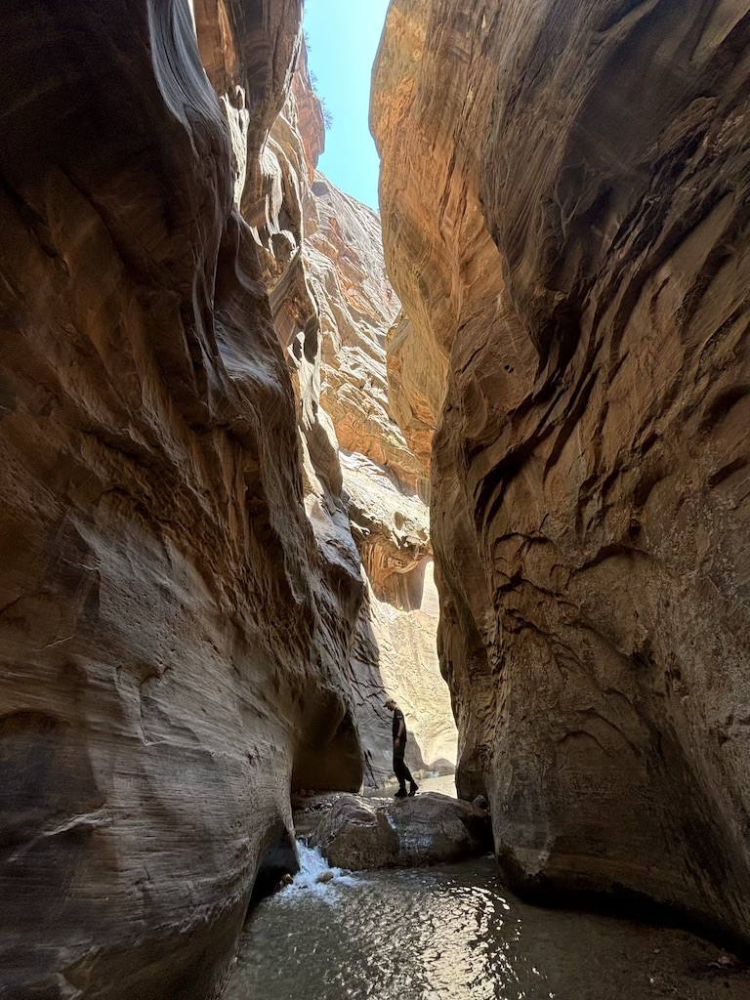

26th July 2024
If your Geography is good you may have noticed how far we've traveled since the last article, only stopping for a Swig on the way. Yellowstone to Zion was a 2 day drive for us, stopping over in the cute town of St George and with the plan to drive on afterwards to Grand Canyon Junction in Arizona. However after hearing and reading great things about Zion national park online we felt we had to spend at least a day there.
Some national parks in the USA have an issue with parking. Despite providing a lot of spaces there seems to still be high competition for spots in the highly desirable car park. With Zion I do understand why they haven't made it any bigger; there isn't any space! The majority of the park is within a single valley, accessible only via a shuttle bus from the visitors center. The wait was about an hour but we did arrive right on peak travel time.
As a result the car park competition and big queue you can see below for the shuttle bus. The shaded waiting area was greatly appreciated as the sun was adding a good 5 or so degrees to the felt temperature. A nice family behind us had large rugged waterproof bags, a brand called Yeti that I had never seen before, and seemed to be water sealed shoes. I started to wonder if we had made a mistake jumping straight into this queue and not asking at the visitors center about what the trails would be like here.

The bus runs from the car park all the way up the valley to a stop called the Tempe of Sinawava. On the way we drive past what I later learn is called Angels Landing; a challenging hike and climb that requires reservation beforehand (learn more here). At the end of the valley we walk a short few kilometers before the path stops and were confronted with the following view.
The walk looks to get even more beautiful, but there is no footpath. Instead people wade through the river in crocs, sandals and those expensive water-tight shoes I saw in the shuttle bus queue. Rats. It's been an hour or so to this point and we don't really want to turn back. Although my partner is recovering from badly twisting her ankle a month or so ago we decide to brave it in our hiking boots, accepting we'll get our feet sodden while doing so.

It was definitely the right decision
The walled sides of the Narrows are stunning. Around each corner the space gets slightly tighter and the higher layers of rocker become more clearly visible. Deep reds, sandy yellows and burnt blacks mixed on the sides of the valley displaying the layers of sedimentary rock clearly. The sun helped keep the visibility high while the cool running river kept us cool as we walked.
The riverbed ungulates in height as you walk upstream, with some sections rising above the waterline. Here is a photo of one of these mounds, flooded when the river rises but bone dry otherwise. An unnaturally wet path rides over it kept damp from the frequent other hikers.

After about an hour of walking we reach Orderville Gulch, a tight spot in the river and a point where 2 rivers meet. We decided to stop here, poking our heads down both of the feeder rivers we saw before turning around. Doing so revealed arguably the most picturesque spot in the whole hike, and potentially the most beautiful place I've been on the trip. Like standing in an alley way between 2 naturally formed skyscrapers. Except instead of walls of concrete and glass it was beautiful red stone enclosed us. Truly an incredible hike.
After spending a little time in this scenic spot we headed back to the car. On the way back I thought it would be fun to record some body-cam style footage on my phone, balancing it under my rucksacks chest strap against my chest. This did not go well; as we crossed a deep bit of the path another hiker walking towards us said "You've just dropped something". Looking down I saw an opaque brown section of the Colorado river and no iPhone balanced against my chest.
I immediately begin running my hands along the riverbed in search of the phone, just barely able to reach without my head going under. I'd say I did a good job of keeping calm considering I knew quite well in a few minutes the phone would have been swept downstream too far to ever be found. After a good 60 seconds of searching I thankfully felt it caught on a stone and pulled it out of the grainy water. Amazingly it was completely fine - no scratches or water damage at all. The face-id unlocked the moment it came out and the screen worked absolutely fine. I'm very grateful to have not lost that phone, as not only was it new and expensive, it also contained a wealth of photos and videos of this trip that were not backed up. Disaster successfully mitigated.
Due to our extended length hike the cool box was cooked completely through, ruining some cheese and salad we had. We did not care - the extended time spent in the park seeing further up The Narrows was totally worth it. My girlfriend still claims this to be her favourite hike from the whole trip. It's simply a must do.
Oh, and to anyone wandering our hiking boots were fine. It literally took minutes in that sun to dry them out. Join us for a retelling of our time spent in the desert climate of The Grand Canyon, Arizona. Otherwise you can return home here.